install.packages("lattice")
install.packages("lubridate")Workshop 3 - Exploring Time Series Data
Introduction
In this workshop, we will produce some high quality visualisations of time series.
By the end of the workshop, you will have seen how to:
- Visualise time series with simple line graphs
-
Manually smooth time series to extract a trend using
loess -
Use
R’s built-in time series decomposition function (stl) to extract time series components where appropriate
You will need to install the following packages:
latticefor drawing trellis plotslubridateat the very end, if you choose to attempt Exercise 3
Exploring Time Series
A graph can be a powerful vehicle for displaying change over time. A time series is a set of quantitative values obtained at successive time points, and time series are most commonly graphed as a simple line graph with time horizontally and the variable being measured shown vertically. Let us have a glance at how to plot time series effectively with an example.
Download data: economics
The economics data set above contains monthly economic data for the USA collected from January 1967 to January 2015. The variables are:
date- month of data collectionpce- personal consumption expenditures, in billions of dollarspop- total population, in thousandspsavert- personal savings rateuempmed- median duration of unemployment, in weeksunemploy- number of unemployed in thousands
The date column is stored in R’s Date format so we can plot it directly. However, this isn’t guaranteed of all data sets and sometimes you will need to convert it (see the as.Date function for how to do so). Thankfully, everything is all set up, so let’s plot the personal savings rate over time:
plot(x=economics$date,y=economics$psavert, xlab='Date',ylab='Personal Savings Rate', ty='l')
Time series of financial variables like these are very often quite noisy and variable. While there is obviously a general global trend, where the line between ‘trend’ and ‘noise’ is drawn is debatable and there is no single clear answer for these data. Fitting a smoother would help us identify a clear smooth trend, but using different levels of smoothing will give us quite different results.
## fit the model, note we have to convert our 'date' to numbers here
lfit <- loess(psavert~as.numeric(date), data=economics)
xs <- seq(min(as.numeric(economics$date)), max(as.numeric(economics$date)), length=200)
lpred <- predict(lfit, data.frame(date=xs), se = TRUE)
## redraw the plot
plot(x=economics$date,y=economics$psavert, xlab='Date',ylab='Personal Savings Rate', ty='l')
lines(x=xs, y=lpred$fit, col='red',lwd=4) 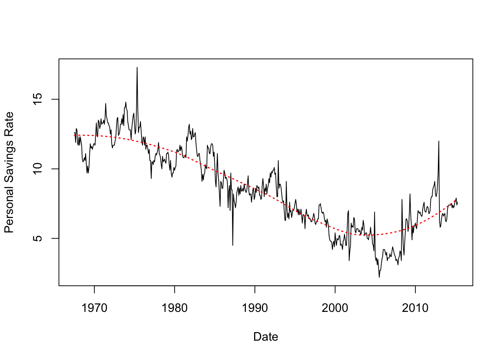
This extracts the overall trend quite cleanly! If we shrink the span, however, we will fit more closely to the lesser peaks in the data - but is this signal or just noise?
## reduce span to get a more localised fit
lfit2 <- loess(psavert~as.numeric(date), data=economics,span=0.1)
lpred2 <- predict(lfit2, data.frame(date=xs), se = TRUE)
## redraw the plot
plot(x=economics$date,y=economics$psavert, xlab='Date',ylab='Personal Savings Rate', ty='l')
lines(x=xs, y=lpred$fit, col='red',lwd=4)
lines(x=xs, y=lpred2$fit, col='green',lwd=4) 
The variation around the trend is quite irregular here, and unless we have any other information to help us explain these features they are difficult to explain. We’ll return to this idea of breaking down a time series into different scales of detail later on.
Exercise 1 (The Fall and Rise of Income Inequality)
Now is your turn to try to make sense of another time series to explore the evolution of income equality over time.
Download data: income
The income data set contains the mean annual income in the USA from 1913 to 2014. The values are given for two separate groups: the top 1% of earners (U01), and the lower 90% of earners (L90). This gives us two time series to explore - the main questions of interest is how have these time series changed relative to each other, and who has done better over the past 100 years? (though we can probably guess the answer)
Task 1a
- Load the data and draw two plots, one above the other, for the incomes in the two groups over time.What features do you see?
- Then make a single plot of both variables. You’ll need to be careful with your vertical axis ranges, which you should set using the
ylimargument to span both series. Use a different colour for each series. What do you observe?
Click for solution
par(mfrow=c(2,1))
plot(y=income$L90,x=income$year,ty='l')
plot(y=income$U01,x=income$year,ty='l')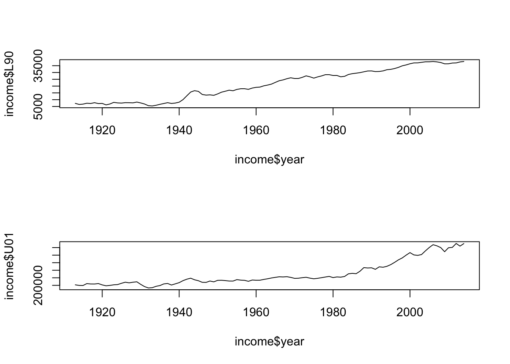
L90 values are a lot smaller, unsurprisingly; L90 appears flat until 1940, then starts to grow steadily, perhaps levelling out after 2010. U01 is also fairly flat until the 40s then slowly increases, and increases more rapidly after 1980
plot(y=income$U01,x=income$year,ty='l', ylim=c(min(income$L90),max(income$U01)))
lines(y=income$L90,x=income$year,col='red')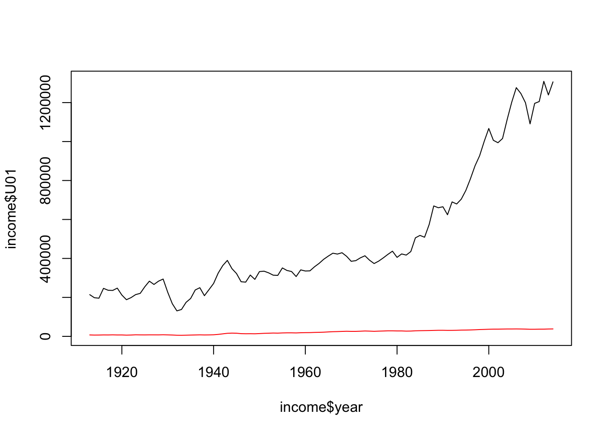
A common problem when series have very different scales is that the variation of the larger series obscures anything going on in the other. A standard approach to this is to set a time point as a baseline (often the first point), and then calculate and plot the relative changes from that baseline value. If we take our first year as baseline, then we can have a scale-free measure of growth to compare:
Task 1b
- Standardise (i.e. divide) both series so they are relative to their first observation. Then subtract 1 and multiply by 100 to create the growth above the baseline on a percentage scale. Save the standardised data to two new variables (or new columns within
income). - Now redraw the plot showing both series of income growth together.
- What features do you see? Could you see these features on the previous plots?
Click for solution
The plot of the standardised data can be obtained with the following code:
income$L90rel <- 100*(income$L90/income$L90[1]-1)
income$U01rel <- 100*(income$U01/income$U01[1]-1)
plot(y=income$U01rel, x=income$year,ty='l')
lines(y=income$L90rel, x=income$year,ty='l',col='red')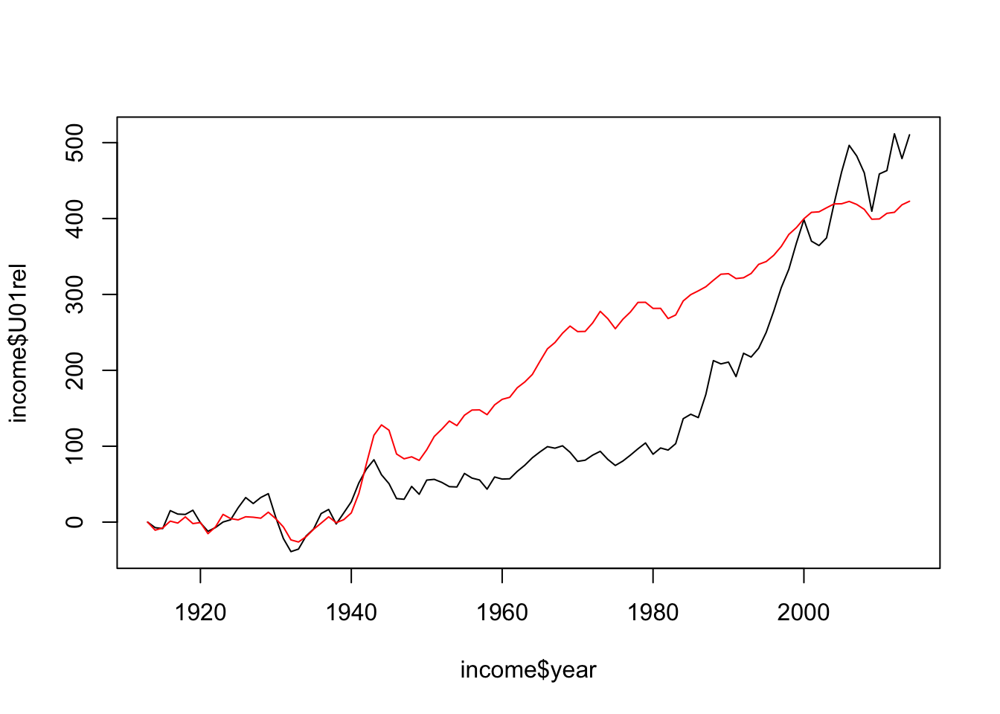
When we have two associated time series, it can be interesting to see how they vary jointly over time. For this we can use a form of scatterplot. However, given the dependence of both variables on time it is importance to connect the points so we can see where the series is coming from and heading to.
Task 1c
- Return to the original value of the
L90andU01, and draw a scatterplot withL90vertically againstU01horizontally. Use plot typety='b'(bfor ‘both’) to connect your points with lines. What features do you see? - To help explain this plot, let’s label the points with the years. The following code will add text labels next to each point, run it and then revisit your plot. See the help on
text(type?text) for details.text(x=income$U01,y=income$L90, labels=income$year, cex=0.5, pos=4) - Can you identify the years corresponding to the clumps of points? What major events took place during these periods that may explain what we see?
- Can you create a factor variable with four levels corresponding to: “Before 1936”, “1936-1960”, “1961-1983”, “After 1983”? You can use the
cutfunction here to split a numerical variable up into a categorical factor. - Use this new factor to colour the points on your plot. What were the main changes in income growth during each of these periods?
Click for solution
groups <- cut(income$year, breaks=c(1900,1936,1960,1983,2020),
labels=c())
plot(x=income$U01, y=income$L90, ty='b',pch=16, col=groups)
text(x=income$U01,y=income$L90, labels=income$year, cex=0.5, pos=4, col=(1:4)[groups])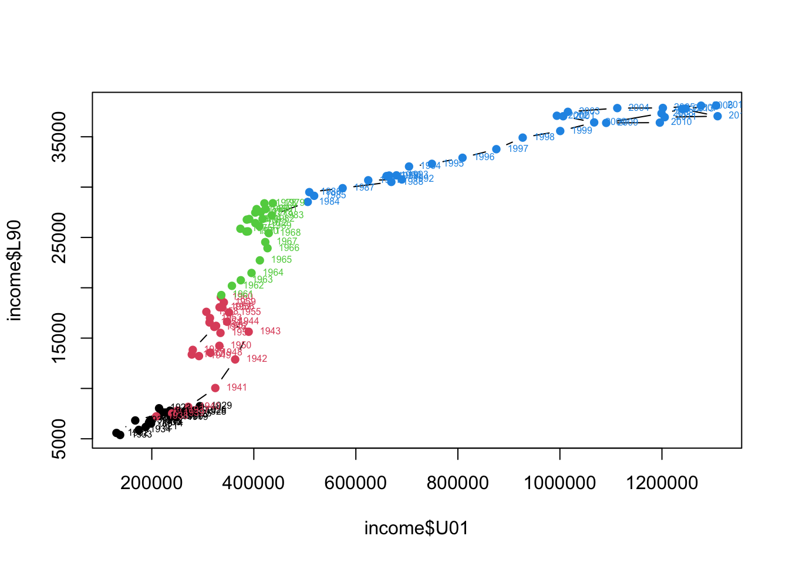
Income for both groups struggles to grow much until the 30s, income growth stalls for all following WW2, and takes until the 60s to recover. L90 income grows steadily until the 70s, after which it grows much more slowly and the U01’s income grows substantially in the 80s/90s. Another stutter in income affects mostly the U01 in the 2000/2010s (financial crisis).
In theory, it should be possible for incomes to rise for everyone at the same time — for the gains of economic growth to be broadly distributed year after year. But the takeaway from these graphs is that since World War II, that’s never really happened in the U.S.
Exercise 2 (CO2 Concentrations at Mauna Loa)
Download data: co2
The co2 data contains the average monthly concentrations of CO2 from 1959 recorded at the Mauna Loa observatory in Hawaii. Environmental time series like this one often have a very strong and regular pattern to them.
Task 2a
- Load the data and make a line plot of the average monthly CO2 concentration (
co2) over time. - What features do you see?
- Redraw the plot, drawing only the data for 2010. How do the data behave?
Click for solution
plot(y=co2$co2,x=co2$decimaldate,ty='l')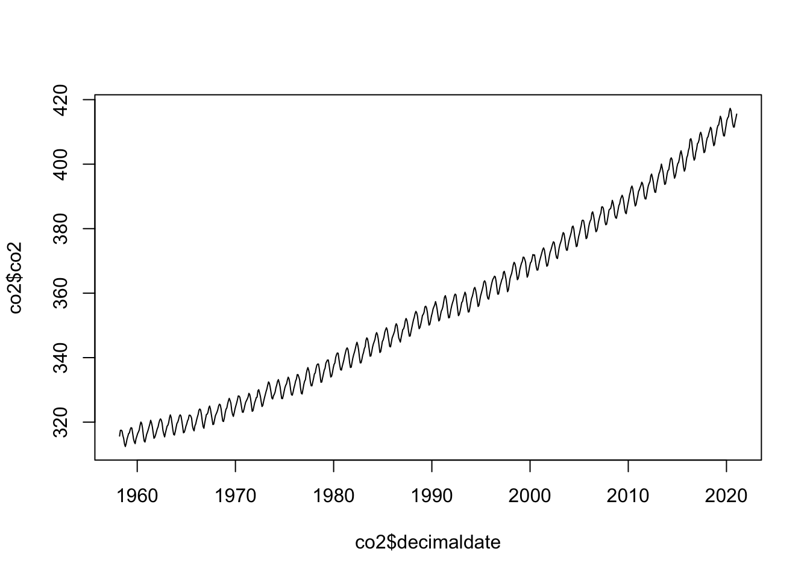
There’s a clear trend here, with a regular wiggle around it
plot(y=co2$co2,x=co2$decimaldate,ty='l', xlim=c(2010,2020))
the wiggle seems to repeat every year, peaking in summer and falling in winter.
For time series with a strong seasonal component it can be useful to look at a Seasonal Decomposition of Time Series by Loess, or STL. Essentially, we define a regular time series such as this in terms of three components:
- The trend - the long-term smooth evolution
- The seasonal component - a regular smooth variation about the trend
- The residuals - random noise on top of everything.
To do a time series decomposition, we’ll need to turn the data into a ts (time series) object so it is recognised by R.
co2ts <- ts(data = co2$co2,
start = co2[1, 1:2],
end = co2[nrow(co2), 1:2],
frequency = 12)Then we can apply the time series decomposition
decomp <- stl(co2ts, s.window = "periodic")and plot the results:
plot(decomp, col = 'blue')Task 2b
- Run these commands now and draw the final plot.
- What is being shown here? Can you explain and interpret the different components?
- The results of the decomposition will be saved in a
decompobject in a time series object calledtime.series, with a column for each component. - Draw a line plot of the time series, and add the trend function on top in red using the values in
decomp. - Try adding the trend+seasonal component to the plot in another colour. Does the model fit look to be good?
- Zoom into 2010-2020 and redraw the same plot with the components. How does it look now?
Click for solution
co2ts <- ts(data = co2$co2,
start = co2[1, 1:2], # columns 1,2 include the year, month
end = co2[nrow(co2), 1:2], # final year, month
frequency = 12) # 12 months per year
decomp <- stl(co2ts, s.window = "periodic")
plot(decomp)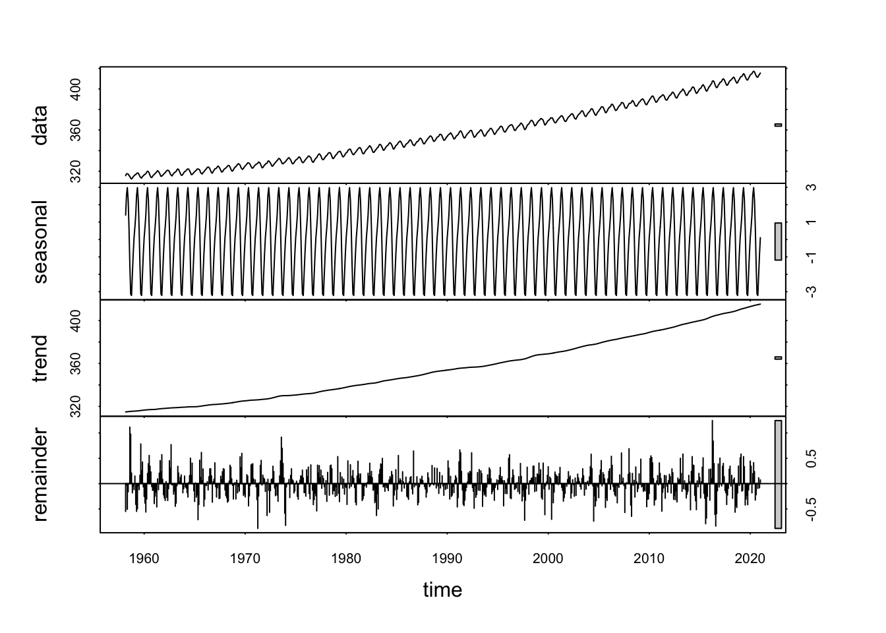
The top panel gives the original data, the second panel gives the estimated regular periodic effect around the overall trend, the third panel shows the overall trend and the final panel shows the residuals (as data - trend - seasonal). The residuals are quite small, suggesting this decomposition describes the data well.
To visualise the time series and the trend in the same plot, we can run the following code:
plot(y=co2$co2,x=co2$decimaldate,ty='l')
## draw a red line for the trend
lines(y=decomp$time.series[,2],x=co2$decimaldate,col='red')
## and a blue line for trend + seasonal
lines(y=decomp$time.series[,1]+decomp$time.series[,2],
x=co2$decimaldate,col='blue')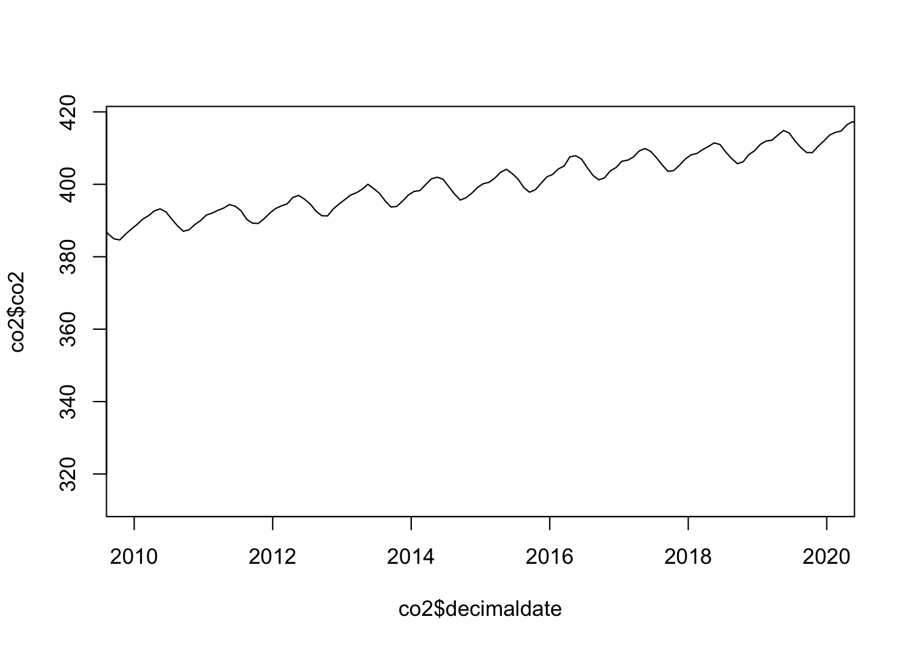
The blue line is a good fit for the time series. Let’s look a little closer
plot(y=co2$co2,x=co2$decimaldate,ty='l', xlim=c(2010,2020)) ## use x-axis limits to zoom in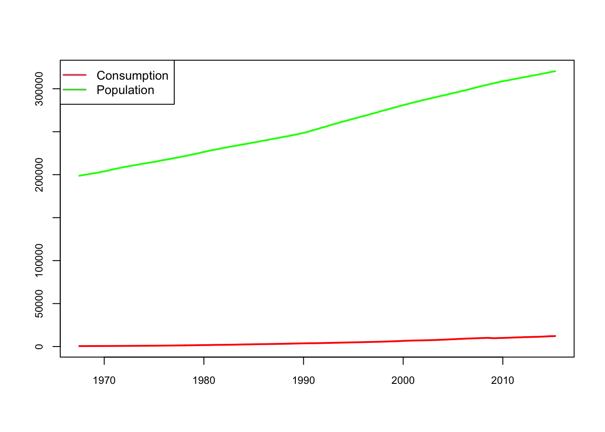
plot(y=co2$co2,x=co2$decimaldate,ty='l', xlim=c(2010,2020), ylim=c(380,420))
lines(y=decomp$time.series[,2],x=co2$decimaldate,col='red')
lines(y=decomp$time.series[,1]+decomp$time.series[,2],
x=co2$decimaldate,col='blue')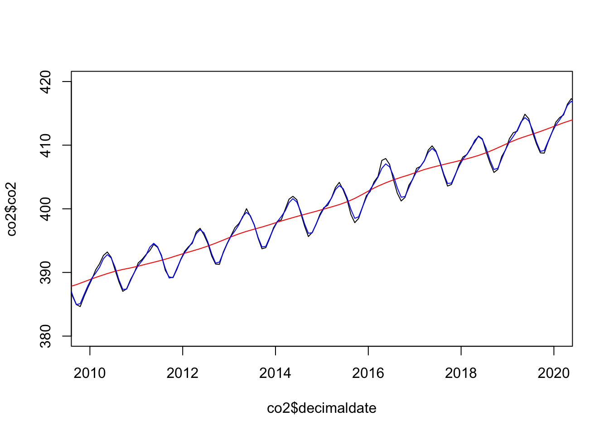
Exercise 3 (Airline Flights from NYC) - optional
The nycflights13 library contains a huge amount of data for all flights departing New York City in 2013. We’ll just focus on a simple summary - the number of departures per day.
Download data: flights
Task 3a
- Plot the line graph of the number of flights (
n) over time (date). - What features do you see?
- Try smoothing the data with
loess, and add your smoothed trend to the plot. You may want to use the decimalised date (e.g. date format written as 2013.1, 2013.2, etc.) asxin your model here. - Redraw the plot, but only show the first three weeks of data (either extract the first 4 weeks of observations, or adjust your axis limits to only show this period). What do you conclude about the behaviour of this time series? Is there a regular seasonal component?
Click for solution
plot(x=flights$date, y=flights$n, xlab='Date', ylab='Number of Flights', ty='l')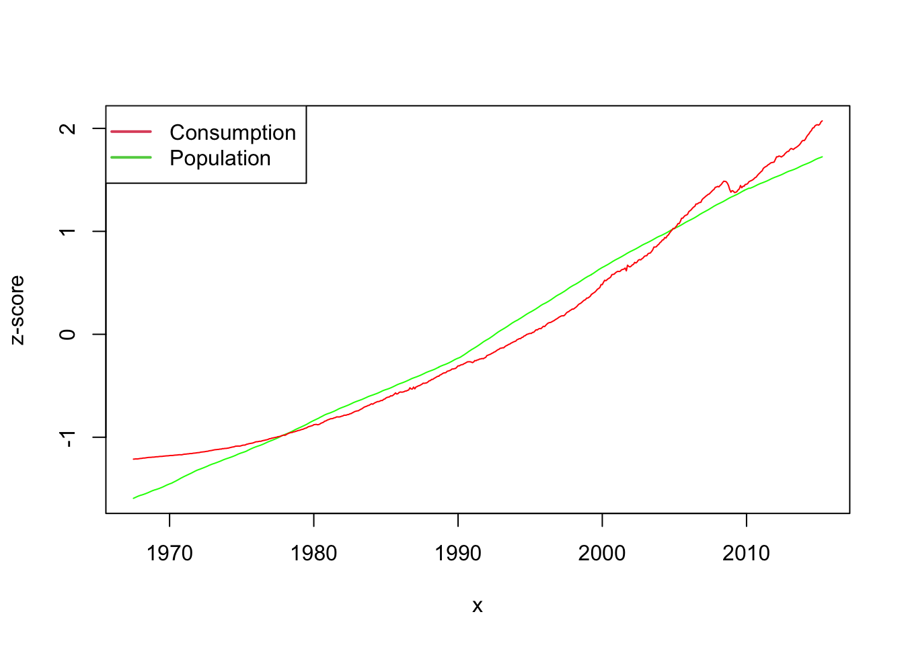
Now, let us fit our smoothing:
flights$decimal_date <- flights$year + (1/12)*flights$month + (1/365)*flights$day
lfit <- loess(n~as.numeric(decimal_date), data=flights)
xs <- seq(min(flights$decimal_date), max(as.numeric(flights$decimal_date)), length=200)
lpred <- predict(lfit, data.frame(decimal_date=xs), se = TRUE)and redraw the plot
plot(x=flights$decimal_date, y=flights$n, xlab='Date', ylab='Number of Flights', ty='l')
lines(x=xs, y=lpred$fit, col='red',lwd=4) 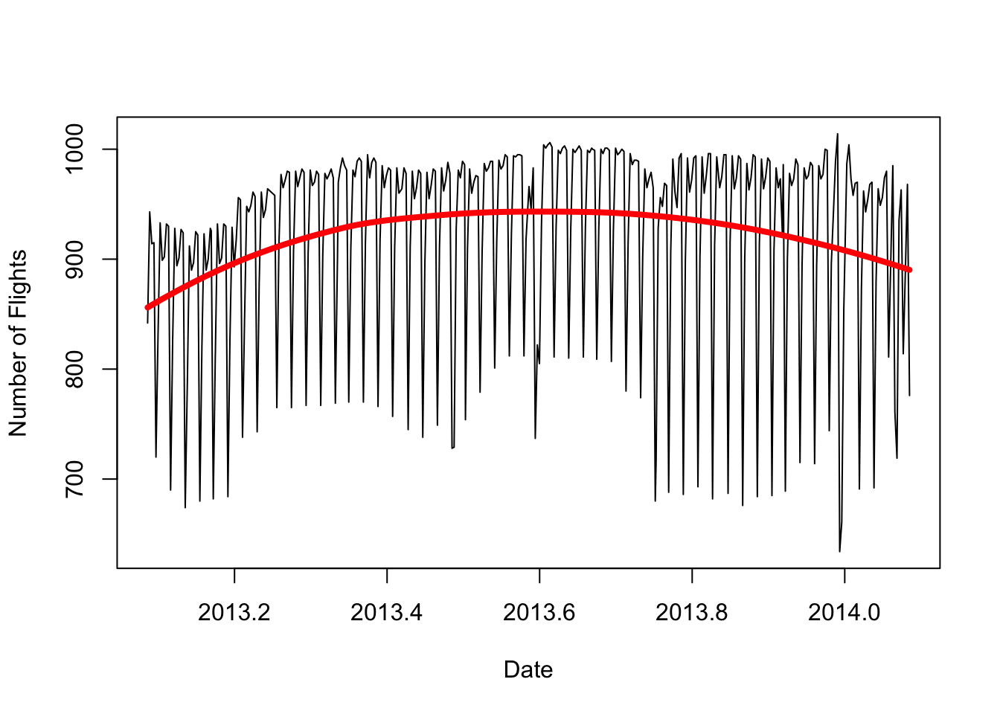
The smoothing shows a slight quadratic trend (i.e. it follows the path of a parabola), but not too far from being uniform. There is a clear periodic trend showing drastic fall in the number of flights at regular intervals. To see the period more clearly, we need to zoom in a shorter timeframe:
flights$decimal_date <- flights$year+flights$month*(1/12)+flights$day*(1/365)
plot(x=flights$decimal_date, y=flights$n, xlab='Date', ylab='Number of Flights', ty='l', xlim=c(2013+1/12, 2013+2/12))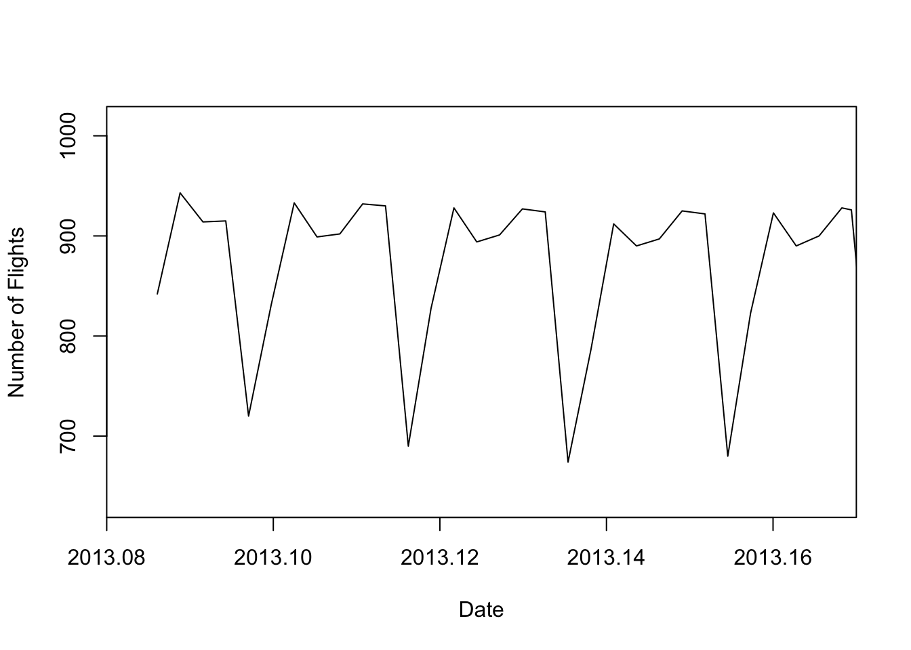
Task 3b
- Divide the data set into groups, according to the day of the week (hint: use the
weekdays()function applied to thedatevariable). - Draw a linegraph of time series of number of departures by date. Which day has the least traffic?
- Does this help to explain the seasonal pattern in the original data?
Click for solution
flights$weekday <- weekdays(flights$date)Here is an example of solution using ggplot (for illustration only! You are not expected to know how to use ggplot but some of you might have seen this in other courses).
We can either visualise the groups separately:
library(ggplot2)
library(dplyr)
Attaching package: 'dplyr'The following objects are masked from 'package:stats':
filter, lagThe following objects are masked from 'package:base':
intersect, setdiff, setequal, unionggplot(flights, aes(x = date, y = n)) +
geom_line() +
facet_wrap(~ weekday, scales = "free_y") +
theme_minimal() +
labs(title = "Daily Departures by Day of the Week",
x = "Date",
y = "Number of Departures")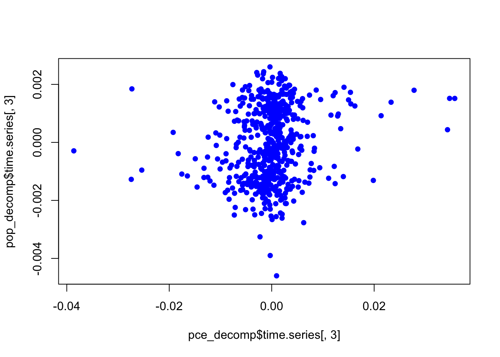
or together in a single plot for comparison (Saturdays are clearly the less traveled days and so the corresponding time series is highlighted in red)
ggplot(flights, aes(x = date, y = n, color = ifelse(weekday == "Saturday", "Saturday", "Other"))) +
geom_line() +
scale_color_manual(values = c("Saturday" = "red", "Other" = "black")) +
theme_minimal() +
labs(title = "Daily Departures (2013)",
x = "Date",
y = "Number of Departures",
color = "Day of the week")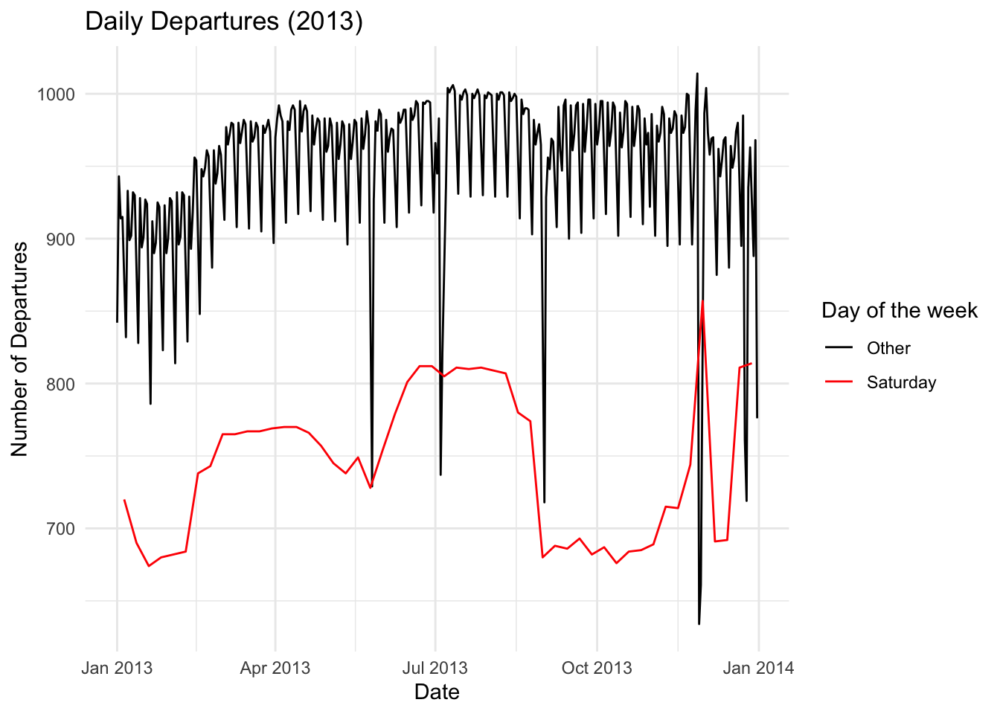
This is one example of a well-structured and regular time series where we can apply the decomposition technique. We have regular variation according to the day of the week, and the pattern repeats every week. First, we setup the data as a time series object using that information:
flts <- ts(flights$n, frequency=7,start=0)We can then use the stl function to decompose the series into its components:
decomp <- stl(flts, s.window='periodic')Task 3c
- Plot the
decompobject to view the decomposition. What features do you see? - Does the decomposed trend look like your smoothed trend? Which do you think explains the data best? Can you explain any differences?
- The trend function appears to exhibit a number of substantial drops in traffic. Let’s look closer:
- Plot the decomposed trend from
decomp$time.series[,2]against thedatevariable in the original data set. - Can you identify the dates of any of these downward spikes in traffic? Hint: you can install the package
lubridateand use the functionabline(v=ymd('2013-12-25'),col='red')to draw a vertical line on Christmas Day.
- Plot the decomposed trend from
Click for solution
plot(decomp)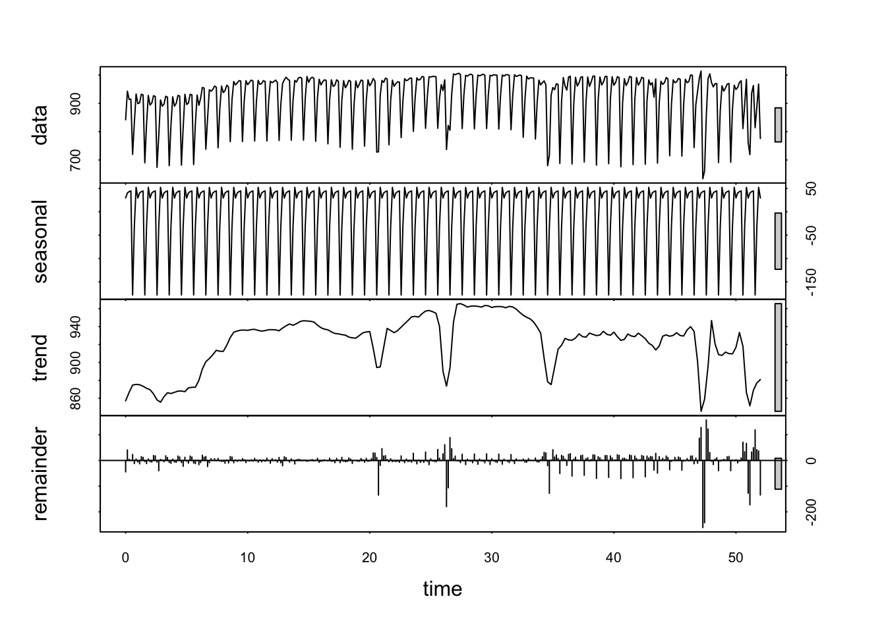
The decomposition seems to be different from our smoothed trend above. This is due to the effect of variations that are not periodic, in this case the variation in flights number that do not occur on Saturdays. The decomposition is finer and allows us to pinpoint drops in traffic that are not periodic.
Let’s have a closer look at these:
plot(y = decomp$time.series[,2], x = flights$date, ty='l')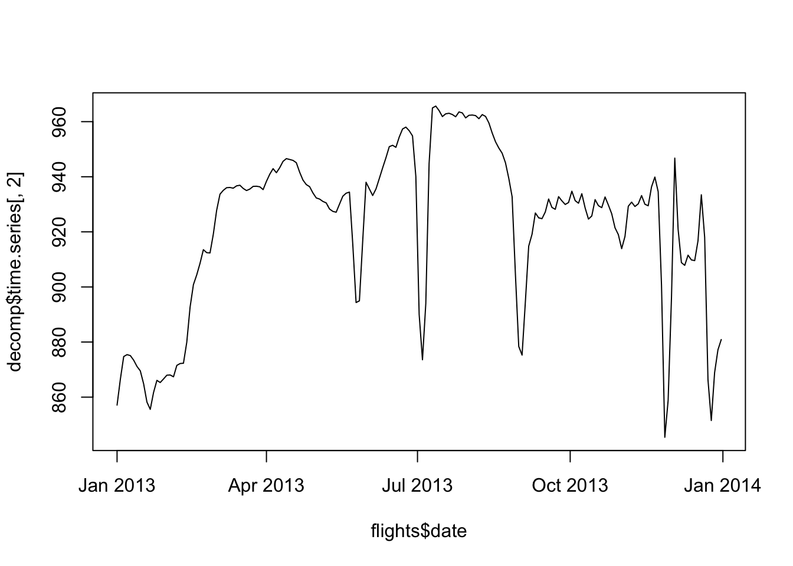
and let’s draw lines in correspondence of main festivities in US
library(lubridate)
Attaching package: 'lubridate'The following objects are masked from 'package:base':
date, intersect, setdiff, unionplot(y = decomp$time.series[,2], x = flights$date, ty='l')
abline(v = ymd('2013-12-25'),col='red') #Christmas
abline(v = ymd('2013-10-31'),col='red') #Halloween
abline(v = ymd('2013-11-28'),col='red') #Thanksgiving
abline(v = ymd('2013-07-04'),col='red') #Independence Day
abline(v = ymd('2013-09-02'),col='red') #Labor Day
abline(v = ymd('2013-05-27'),col='red') #Memorial Day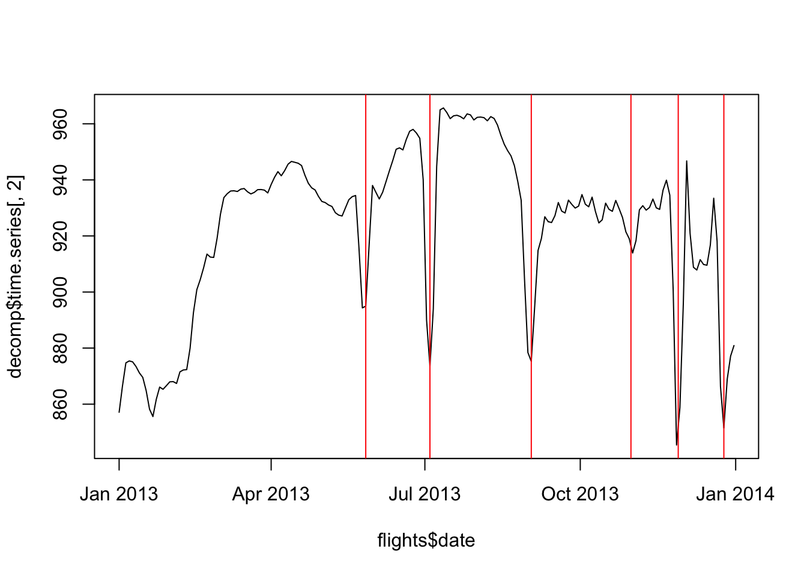
Time series of human activity are often very cyclical, with many predictable features. Whilst perhaps not hugely surprising, part of the job of an exploratory analysis is to check whether what might think should be obvious actually is obvious in the data!